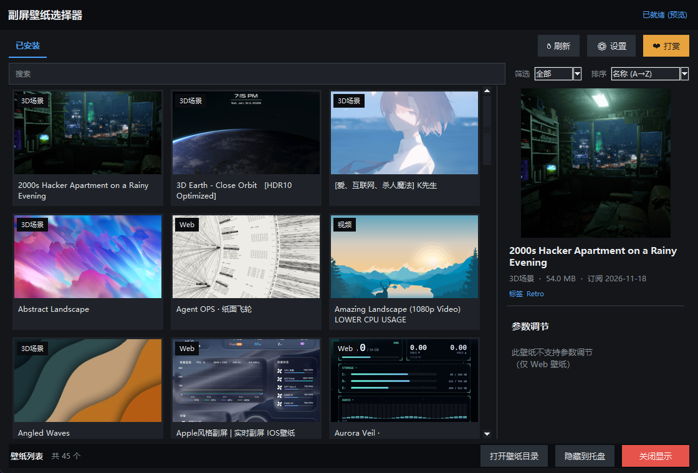
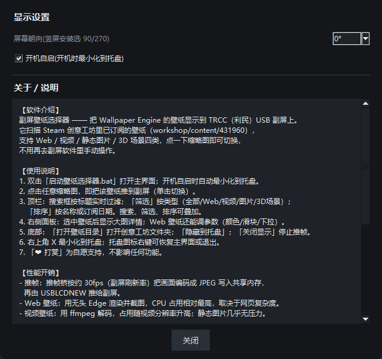

仿 Wallpaper Engine 的深色界面，三列大图网格 + 右侧详情面板。


针对 TRCC（利民）USB 副屏做的专用工具，不是普通显示器投屏。
Web、视频、静态图片、3D 场景，直接读 Steam 创意工坊里的 Wallpaper Engine 壁纸。
按标题实时搜索，按类型筛选，按名称或订阅日期排序，偏好会记住。
自动识别副屏分辨率（覆盖 1920×462、2560×720 等 16+ 种），无需手动设置。
兼容 wallpaperPropertyListener，可在面板里调节 Web 壁纸参数。
最小化到托盘，开机自动恢复上次壁纸，路径自动探测并写入 config.json。
推帧桥崩溃自动重启（5 分钟内最多 2 次），日志统一写在 config/app.log。
下载 zip，解压，双击。全程不需要命令行。
首次运行被 Windows SmartScreen 拦住属于正常现象——程序未做代码签名证书，点「更多信息 → 仍要运行」即可。
| 系统 | Windows 10 / 11（64 位） |
|---|---|
| TRCC 软件 | 已安装且能正常驱动副屏（目录内有 USBLCDNEW.exe） |
| Wallpaper Engine | 已安装并订阅壁纸（壁纸来源与 3D 场景渲染） |
| 副屏 | TRCC（利民）USB 副屏，已插好并被系统识别 |
| Python | 不需要，已打包进 exe |
首次运行会生成 config.json，用记事本打开，手改三个路径即可：trcc_dir（TRCC 安装目录）、workshop_dir（Steam 创意工坊 431960 目录）、trcc_data_dir。
通常是 TRCC 的 USBLCDNEW.exe 没在跑，或副屏没被识别。先确认 TRCC 自带的壁纸功能正常，再启动选择器；程序会在设备枚举期间自动重试，最多等 2 秒就先推一帧。
不能。本工具走的是 TRCC 的共享内存 + USBLCDNEW 推帧协议，专门针对 USB 副屏，不是普通显示器扩展方案。
PyInstaller 打包的未签名 exe 容易被启发式规则误报。可加入白名单，或从 Releases 核对文件大小/哈希后再运行。
不是，免费自用项目，作者是业余时间维护。